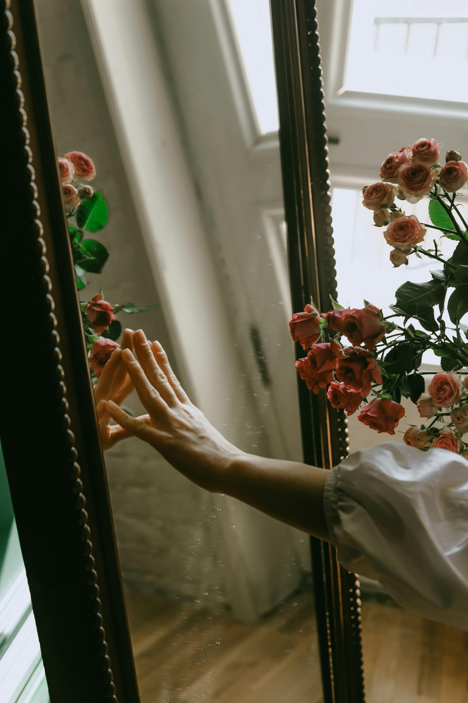

Poética
Vinicius de Moraes
De manhã escureço
De dia tardo
De tarde anoiteço
De noite ardo.
A oeste a morte
Contra quem vivo
Do sul cativo
O este é meu norte.
Outros que contem
Passo por passo:
Eu morro ontem
Nasço amanhã
Ando onde há espaço:
– Meu tempo é quando.

Somos Todos Iguais
Mauro Cezar
Por que abristes a boca para clamar
Por preconceito, racismo e humilhação?
O que te fiz eu? Algum mal por acaso?
Conseguistes com teu ato despedaçar
Minh'alma e quebrar meu coração,
Com um gesto tão injusto,
Para quem só queria te dar emoção.
Resolvestes resgatar os tempos de angústia,
sofrimento, torturas e tantos outros males
que tinham ficado no passado.
Tu não vês que sois meu irmão?
Porque fazer assim
Se podemos dar as mãos?
Esqueces o passado, onde a cor da pele
Valia mais que um abraço.
Vamos caminhar juntos dando longos passos.
Ao final, verás que somos todos iguais
E a distância que havia entre nós
Já não existe mais.
Vem, me dá um forte abraço e
Aperta minha mão, pois eu te perdoo
Do fundo do meu coração.

sentimentos legendados
Zack Magiezi
não acredito em amor a distância
pois independentemente da geografia
o amor é uma proximidade